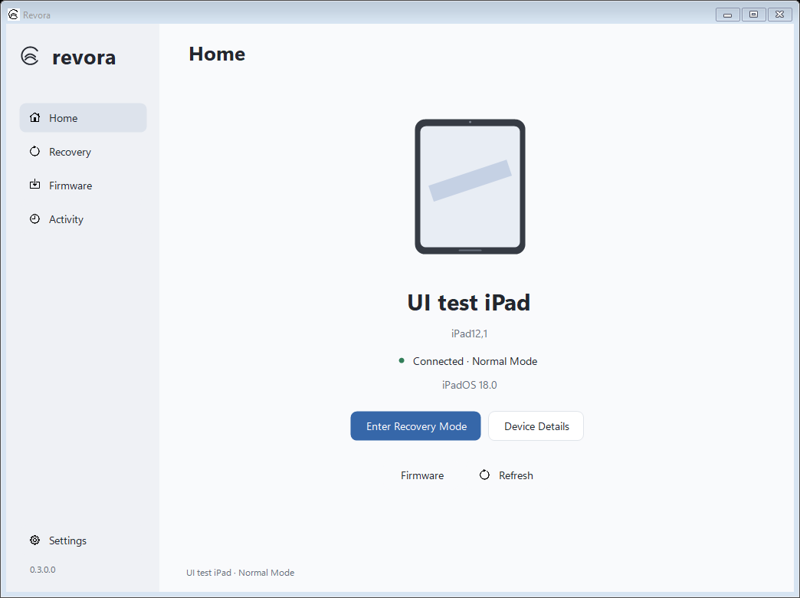

Know what’s connected.
See device and firmware details, with recognition for normal, recovery, and DFU modes. Keep a local activity history along the way.
For the moment your
device needs a little help.
iPhone and iPad recovery, with room to breathe.
A focused Windows utility for device details,
recovery mode, and local IPSW firmware.

From the first USB connection to a firmware check, Revora keeps the important details in view.
See device and firmware details, with recognition for normal, recovery, and DFU modes. Keep a local activity history along the way.
Enter recovery mode or request a return to normal mode. For DFU, follow manual exit guidance in the app.
Inspect a local IPSW, check product and hardware compatibility, and choose between update and erase restore workflows.
Recovery tools should tell you what’s happening—and what’s at stake.
Revora checks the firmware manifest, hardware compatibility, and device identity before restore. Update and erase are separate choices, with explicit confirmation before an erase.
Back up your device. An update attempts to preserve data but cannot guarantee it. An erase restore deletes all data. Real-device restore has not yet been validated in this early release.
Read the device validation checklistWindows 10 or 11 x64, .NET Framework 4.8, and Apple USB drivers from Apple Devices for Windows. Extract the complete release archive and run Revora.exe, keeping the tools folder beside it. Unlock a normal-mode device and accept “Trust This Computer.” Connect one recovery or DFU device at a time.
Revora runs locally with no accounts, analytics, or cloud sync. Logs and firmware cache are stored on your PC. Logs can contain device identifiers; review them before sharing. Firmware signing checks communicate with Apple.
Revora cannot repair hardware, bypass Activation Lock, remove an Apple Account association, or install firmware Apple no longer signs. Requesting an exit from recovery may return the device to recovery if the underlying boot problem remains.
It is an early development release. Automated tests cover core workflows and rendered layouts, but physical recovery and restore still require device validation. The app and bundled tools are unsigned and may be blocked by Windows application-control policies.
Yes. Revora’s C# source uses the MIT License. Read the source and build instructions on GitHub. Bundled native tools retain their upstream licenses.
Open source. Local-first. Built for Windows.